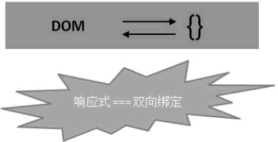

首页 > 编程笔记
Vue.js是什么？它有什么特点？
在学习 Vue.js 之前，读者应该已经学习过 HTML、CSS 和 JavaScript 基本知识，本文主要介绍 Vue.js 是什么，它有什么特点和优势。
Vue.js 是一套响应式的 JavaScript 开发库。其他前端开发库也有很多，比如 jQuery、ExtJS、Angular 等。
Vue.js 自问世以来所受关注度不断提高，在现在的市场上，Vue.js 是非常流行的 JavaScript 技术开发框架之一。
2014 年 2 月，尤雨溪开源了一个前端开发库 Vue.js。Vue.js 是构建 Web 界面的 JavaScript 库，也是一个通过简洁的 API 提供高效数据绑定和灵活组件的系统。
2016 年 9 月 3 日，在南京的 JSConf 上，尤雨溪正式宣布以技术顾问的身份加盟阿里巴巴 Weex 团队，来做 Vue 和 Weex 的 JavaScript runtime 整合，目标是让大家能用 Vue 的语法跨三端。
目前，尤雨溪全职投入 Vue.js 的开发与维护，立志将 Vue.js 打造成与 Angular/React 平起平坐的世界顶级框架。
Vue 的核心库只关注视图层，并且非常容易学习，也非常容易与其他库或已有项目整合。Vue 完全有能力驱动采用单文件组件和 Vue 生态系统支持的库开发的复杂单页应用。
Vue.js 还提供了 MVVM 数据绑定和一个可组合的组件系统，具有简单、灵活的 API，其目标是通过尽可能简单的 API 实现响应式的数据绑定和可组合的视图组件。
我们也可以说 Vue.js 是一套响应式系统（Reactivity System）。数据模型层（Model）只是普通 JavaScript 对象，如下图所示，
我们把最基本的视图结构（也就是 HTML DOM）拿出来，称为视图层。这个被称为视图层的部分就是 Vue 核心库关注的部分。
Vue.js 为什么关注视图层呢？因为一些页面元素非常多。结构庞大的网页如果使用传统开发方式，数据和视图会全部混合在 HTML 中，处理起来十分不易，并且结构之间还存在依赖或依存关系，代码上就会出现更多问题。
有过前端开发基础的读者都应当了解过 jQuery，jQuery 给予我们简洁的语法和跨平台的兼容性，极大地简化了 JavaScript 开发人员遍历 HTML 文档、操作 DOM、事件处理等操作。
用过 jQuery 的读者都有体会，开始页面元素不多，有时会需要一层层地不断向上寻找父辈元素，如
总之，原本轻巧简洁的 jQuery 代码，在产品需求面前变得啰嗦冗长。
但是 Vue.js 解决了这些问题，这些问题将在 Vue 中消失。
在 Vue 中，父子组件通过 props 传递通信，从父向子单向传递。子组件与父组件通信，通过触发事件通知父组件改变数据。这样就形成了一个基本的父子通信模式。
在开发中组件和 HTML、JavaScript 等有非常紧密的关系时，可以根据实际的需要自定义组件，使开发变得更加便利，可大量减少代码编写量。
组件还支持热重载（hotreload）。当我们做了修改时，不会刷新页面，只是对组件本身进行立刻重载，不会影响整个应用当前的状态。CSS 也支持热重载。
作为前端开发人员的首选入门框架，Vue 有很多优势：
Vue.js 是一套响应式的 JavaScript 开发库。其他前端开发库也有很多，比如 jQuery、ExtJS、Angular 等。
Vue.js 自问世以来所受关注度不断提高，在现在的市场上，Vue.js 是非常流行的 JavaScript 技术开发框架之一。
Vue.js 是什么？
在介绍 Vue.js 是什么之前，我们先来简单介绍一下它的作者尤雨溪（Evan You），以及它的由来。尤雨溪
尤雨溪是一位美籍华人，在上海复旦大学附中读完高中后，在美国完成大学学业，本科毕业于 Colgate University，后在 Parsons 设计学院获得 Design & Technology 艺术硕士学位。他是 Vue Technology LLC 创始人，曾经在 Google Creative Lab 就职，参与过多个项目的界面原型研发，后加入 Meteor，参与 Meteor 框架本身的维护和 Meteor Galaxy 平台的交互设计与前端开发。2014 年 2 月，尤雨溪开源了一个前端开发库 Vue.js。Vue.js 是构建 Web 界面的 JavaScript 库，也是一个通过简洁的 API 提供高效数据绑定和灵活组件的系统。
2016 年 9 月 3 日，在南京的 JSConf 上，尤雨溪正式宣布以技术顾问的身份加盟阿里巴巴 Weex 团队，来做 Vue 和 Weex 的 JavaScript runtime 整合，目标是让大家能用 Vue 的语法跨三端。
目前，尤雨溪全职投入 Vue.js 的开发与维护，立志将 Vue.js 打造成与 Angular/React 平起平坐的世界顶级框架。
Vue.js 核心理念
Vue.js（读音/vju：/，发音类似于view）是一套构建用户界面的渐进式框架。与其他重量级框架不同的是，Vue 采用自底向上增量开发的设计。Vue 的核心库只关注视图层，并且非常容易学习，也非常容易与其他库或已有项目整合。Vue 完全有能力驱动采用单文件组件和 Vue 生态系统支持的库开发的复杂单页应用。
Vue.js 还提供了 MVVM 数据绑定和一个可组合的组件系统，具有简单、灵活的 API，其目标是通过尽可能简单的 API 实现响应式的数据绑定和可组合的视图组件。
我们也可以说 Vue.js 是一套响应式系统（Reactivity System）。数据模型层（Model）只是普通 JavaScript 对象，如下图所示，
{ }代表一个 JavaScript 对象，修改它则更新相应的 HTML 片段（DOM），这些 HTML 片段也称为“视图（view）”。这会让状态管理变得非常简单且直观，可实现数据的双向绑定，所以我们也称之为响应式系统。

为什么使用 Vue.js
我们都知道完整的网页是由 DOM 组合与嵌套形成最基本的视图结构，再加上 CSS 样式的修饰，使用 JavaScript 接受用户的交互请求，并通过事件机制来响应用户交互操作而形成的。我们把最基本的视图结构（也就是 HTML DOM）拿出来，称为视图层。这个被称为视图层的部分就是 Vue 核心库关注的部分。
Vue.js 为什么关注视图层呢？因为一些页面元素非常多。结构庞大的网页如果使用传统开发方式，数据和视图会全部混合在 HTML 中，处理起来十分不易，并且结构之间还存在依赖或依存关系，代码上就会出现更多问题。
有过前端开发基础的读者都应当了解过 jQuery，jQuery 给予我们简洁的语法和跨平台的兼容性，极大地简化了 JavaScript 开发人员遍历 HTML 文档、操作 DOM、事件处理等操作。
用过 jQuery 的读者都有体会，开始页面元素不多，有时会需要一层层地不断向上寻找父辈元素，如
$('#xxx').parent().parent()，但后期修改页面结构，代码可能就会变得臃肿，如$('#xxx').parent().parent().parent()，随着产品升级的速度越来越快，修改变得越来越多，页面中相似的关联和嵌套 DOM 元素多得数不清，而 jQuery 选择器及 DOM 操作本身也存在性能缺失问题，想要修改无从下手。总之，原本轻巧简洁的 jQuery 代码，在产品需求面前变得啰嗦冗长。
但是 Vue.js 解决了这些问题，这些问题将在 Vue 中消失。
Vue.js 的主要特点
Vue.js 是一个优秀的前端界面开发 JavaScript 库，它之所以非常火，是因为有众多突出的特点，其中主要的特点有以下几个。1) 轻量级的框架
Vue.js 能够自动追踪依赖的模板表达式和计算属性，提供 MVVM 数据绑定和一个可组合的组件系统，具有简单、灵活的 API，使读者更加容易理解，能够更快上手。2) 双向数据绑定
声明式渲染是数据双向绑定的主要体现，同样也是 Vue.js 的核心，它允许采用简洁的模板语法将数据声明式渲染整合进 DOM。3) 指令
Vue.js 与页面进行交互，主要就是通过内置指令来完成的，指令的作用是当其表达式的值改变时相应地将某些行为应用到 DOM 上。4) 组件化
组件（Component）是 Vue.js 最强大的功能之一。组件可以扩展 HTML 元素，封装可重用的代码。在 Vue 中，父子组件通过 props 传递通信，从父向子单向传递。子组件与父组件通信，通过触发事件通知父组件改变数据。这样就形成了一个基本的父子通信模式。
在开发中组件和 HTML、JavaScript 等有非常紧密的关系时，可以根据实际的需要自定义组件，使开发变得更加便利，可大量减少代码编写量。
组件还支持热重载（hotreload）。当我们做了修改时，不会刷新页面，只是对组件本身进行立刻重载，不会影响整个应用当前的状态。CSS 也支持热重载。
5) 客户端路由
Vue-router 是 Vue.js 官方的路由插件，与 Vue.js 深度集成，用于构建单页面应用。Vue 单页面应用是基于路由和组件的，路由用于设定访问路径，并将路径和组件映射起来，传统的页面是通过超链接实现页面的切换和跳转的。6) 状态管理
状态管理实际就是一个单向的数据流，State 驱动 View 的渲染，而用户对 View 进行操作产生 Action，使 State 产生变化，从而使 View 重新渲染，形成一个单独的组件。最新发行的 Vue 2.X 比 Vue 1.X 更轻、更快，不仅在 Vue 1.X 基础上有很大的提升，相比于其他框架还有很大的性能优势。Vue 学起来比较简单，更容易上手。
Vue.js 有什么优势
Vue 与其他框架相比有什么优势呢？上面我们已经提到了 jQuery，还有其他的前端框架，如 React、Angular 等。相比较而言，Vue 最为轻量化，而且已经形成了完整的一套生态系统，可以快速迭代更新。作为前端开发人员的首选入门框架，Vue 有很多优势：
- Vue.js 可以进行组件化开发，使代码编写量大大减少，读者更加易于理解。
- Vue.js 最突出的优势在于可以对数据进行双向绑定（在之后的编写中我们会明显地感觉到这个特点的便捷）。
- 使用 Vue.js 编写出来的界面效果本身就是响应式的，这使网页在各种设备上都能显示出非常好看的效果。
- 相比传统的页面通过超链接实现页面的切换和跳转，Vue 使用路由不会刷新页面。
说明：Vue必须在ES5版本以上的环境下使用，一些不支持ES5的旧浏览器中无法运行Vue。
关注公众号「站长严长生」，在手机上阅读所有教程，随时随地都能学习。内含一款搜索神器，免费下载全网书籍和视频。

微信扫码关注公众号